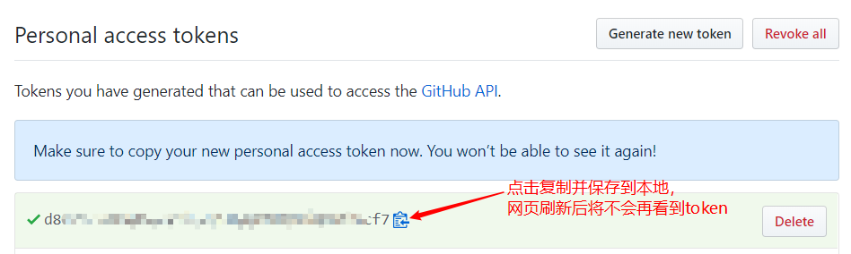

本篇文章是自动初始化 Gitalk 和 Gitment 评论的解决办法，如果还没配置 Gitalk，建议先看上一篇文章的添加 Gitalk 的评论插件，再来看这篇文章。
遇到的问题
Gitalk配置完成后，启动hexo，打开文章页面，需要登陆 github，一篇一篇文章地点过去，完成初始化后才能使用，操作比较麻烦，下面介绍用 Node.js 来自动初始化 Gitalk 的方法
解决问题
生成 Sitemap 站点地图
站点地图是一种文件，您可以通过该文件列出您网站上的网页，从而将您网站内容的组织架构告知Google和其他搜索引擎。搜索引擎网页抓取工具会读取此文件，以便更加智能地抓取您的网站。
在你的 hexo 根目录，执行下面两个命令来安装针对 google 和百度的插件
1
2
| npm install hexo-generator-sitemap --save
npm install hexo-generator-baidu-sitemap --save
|
- 在站点根目录下的_config.yml添加如下代码
1
2
3
4
5
6
|
sitemap:
path: sitemap.xml
baidusitemap:
path: baidusitemap.xml
|
现在再执行 hexo generate 或 hexo g 的时候，在博客根目录下的 public 文件夹下面就会生成sitemap.xml 和 baidusitemap.xml。
获取github接口的调用权限
- 创建一个access token，点击链接进入
- 点击
Generate new token 按钮
- 输入一个描述，为 token 添加所有的 repo 权限，然后点击最下方的
Generate token 按钮，就可以生成一个新的 Token 备用
- 生成的 token，在后面使用

脚本文件
安装依赖包
在你的 hexo 根目录，执行下面的命令
1
2
3
4
5
| npm install request --save
npm install xml-parser --save
npm install yamljs --save
npm install cheerio --save
npm install blueimp-md5 --save
|
创建脚本文件
在站点根目录下创建 comment.js 文件，将下面的代码粘贴进文件中，修改下面代码中的 config 配置项，其中 token 就是上一步中获取的值
1
2
3
4
5
6
7
8
9
10
11
12
13
14
15
16
17
18
19
20
21
22
23
24
25
26
27
28
29
30
31
32
33
34
35
36
37
38
39
40
41
42
43
44
45
46
47
48
49
50
51
52
53
54
55
56
57
58
59
60
61
62
63
64
65
66
67
68
69
70
71
72
73
74
75
76
77
78
79
80
81
82
83
84
85
86
87
88
89
90
91
92
93
94
95
96
97
98
99
100
101
102
103
104
105
106
107
108
109
110
111
112
113
114
115
116
117
118
119
120
121
122
123
124
| const request = require("request");
const fs = require("fs");
const path = require("path");
const url = require("url");
const xmlParser = require("xml-parser");
const YAML = require("yamljs");
const cheerio = require("cheerio");
const md5 = require("blueimp-md5")
const config = {
username: "GitHub 用户名",
token: "GitHub Token",
repo: "用户名.github.io",
sitemapUrl: path.resolve(__dirname, "./public/baidusitemap.xml"),
kind: "Gitalk",
};
let issuesUrl = `https://api.github.com/repos/${config.username}/${config.repo}/issues?access_token=${config.token}`;
let requestGetOpt = {
url: `${issuesUrl}&page=1&per_page=1000`,
json: true,
headers: {
"User-Agent": "github-user"
}
};
let requestPostOpt = {
...requestGetOpt,
url:issuesUrl,
method: "POST",
form: ""
};
console.log("开始初始化评论...");
(async function() {
console.log("开始检索链接，请稍等...");
try {
let websiteConfig = YAML.parse(fs.readFileSync(path.resolve(__dirname, "./_config.yml"), "utf8"));
let urls = sitemapXmlReader(config.sitemapUrl);
console.log(`共检索到${urls.length}个链接`);
console.log("开始获取已经初始化的issues:");
let issues = await send(requestGetOpt);
console.log(`已经存在${issues.length}个issues`);
let notInitIssueLinks = urls.filter((link) => {
return !issues.find((item) => {
link = removeProtocol(link);
return item.body.includes(link);
});
});
if (notInitIssueLinks.length > 0) {
console.log(`本次有${notInitIssueLinks.length}个链接需要初始化issue：`);
console.log(notInitIssueLinks);
console.log("开始提交初始化请求...");
setTimeout(async ()=>{
let initRet = await notInitIssueLinks.map(async (item) => {
let html = await send({ ...requestGetOpt, url: item });
let title = cheerio.load(html)("title").text();
let pathLabel = url.parse(item).path;
pathLabel = md5(pathLabel);
let body = `${item}<br><br>${websiteConfig.description}`;
let form = JSON.stringify({ body, labels: [config.kind, pathLabel], title });
return send({ ...requestPostOpt, form });
});
console.log(`已完成${initRet.length}个！`);
console.log("可以愉快的发表评论了！");
},4);
} else {
console.log("本次发布无新增页面，无需初始化issue!!");
}
} catch (e) {
console.log(`初始化issue出错，错误如下：`);
console.log(e);
} finally {
}
})();
function sitemapXmlReader(file) {
let data = fs.readFileSync(file, "utf8");
let sitemap = xmlParser(data);
return sitemap.root.children.map(function (url) {
let loc = url.children.filter(function (item) {
return item.name === "loc";
})[0];
return loc.content;
});
}
function removeProtocol(url) {
return url.substr(url.indexOf(":"));
}
function send(options) {
return new Promise(function (resolve, reject) {
request(options, function (error, response, body) {
if (!error) {
resolve(body);
} else {
reject(error);
}
});
});
}
|
上面的脚本在参考文章的基础上稍微做了下修改，与原来的参考文章不同之处已经另起一行单独显示，并在注释中明确标注出来了，下面是这几处不同的地方，需要读者注意一下
- 引入 md5
因为我们在添加 Gittalk 评论插件 时由于考虑到 label 的长度不能超过 50 个字符，对路径做了 md5 的哈希，而初始化评论就是根据你的 label 值来新开一个 issue
所以当你在添加 Gitalk 评论时对路径做了 md5 转换，那么这里也需要做一个相同的转换才能与对应的文章匹配，从而可以成功地创建文章对应的 issue，上面代码中引入的 md5 可以在这里找到
- 修改
sitemap.xml 为 baidu-sitemap.xml
可能是因为我生成的 sitemap.xml 与参考文章作者的并不相同，在 path 为 sitemap.xml，即下面所示的代码：
1
2
|
sitemapUrl: path.resolve(__dirname, "./public/sitemap.xml"),
|
时执行后会报错，提示找不到根节点，后来在 debug 过程中发现在 sitemap.xml 中并没有文章的路径，而是主页、关于页、tag 页等页面的路径，后来发现在 baidu-sitemap.xml 中生成了全部文章的路径，并且很好的一点是没有其他页面的路径，这就保证了其他页面不会有对应的 issue，遂改为 baidu-sitemap.xml ，执行成功。
参考文章的作者其实也指出了这一点：
需要注意的是第一步中的sitemap插件会生成的sitemap.xml会包含全部的界面，包括标签页、关于页等，执行上面的代码也会对这些页面生成评论框(也就是issue)
- 等待时间 40 s
由于我自己在测试时并没有发现初始化会特别慢，反倒是代码中强制等待 40 s才能结束进程的设计，让我很是心烦，所以把 40000ms 改为了 4ms，看着代码一行一行畅快地执行完成，心里爽多了。
- 执行脚本可能会遇到的错误
我自己执行脚本的时候还发现了其他的错误，也浪费了不少时间，这里拿出来说下
执行脚本
完成上述操作后，执行下面的命令，就可以部署站点，并初始化所有的评论了。
1
2
3
4
| hexo clean
hexo generate
hexo deploy
node ./comment.js
|
也可以通过在站点根目录的package.json文件中，新建npm脚本，一个命令搞定清除缓存、生成静态文件、提交git并生成issue的所有操作。
1
2
3
4
5
6
7
8
9
10
11
| "scripts": {
"build": "hexo generate",
"clean": "hexo clean",
"server": "hexo server",
"test": "hexo clean && hexo s",
"t": "hexo clean && hexo s",
"deploy": "hexo clean && hexo generate && hexo deploy && node ./comment.js",
"d": "hexo clean && hexo generate && hexo deploy && node ./comment.js",
"comment": "node ./comment.js",
"c": "node ./comment.js"
},
|
完成文章编写，或者其他的更新操作后，直接执行 deploy 即可。
或：
参考文章
nodejs版本的Gitalk/Gitment评论自动初始化